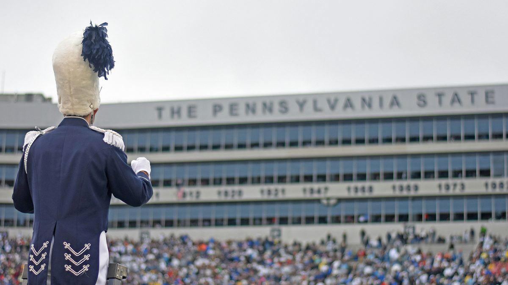

For six hours on a Saturday, this stadium becomes Pennsylvania's third-largest city.
Then it vanishes.
On a fall Saturday, Beaver Stadium holds roughly 108,000 people — more than any city in Pennsylvania but Philadelphia and Pittsburgh. Game day needs a mid-sized city's internal transit for one afternoon, then none of it. The one thing it never gets is a way to move people across it.
On October 10, 2026, roughly 108,000 people will pour into Beaver Stadium to watch Penn State play USC. With the new upper-bowl bleachers from its $700 million renovation in place, Penn State's athletic director expects the stadium to seat around 108,000 for the USC game — enough to make Beaver Stadium the largest in the country, passing Michigan Stadium's 107,601. (247Sports; Sports Illustrated)
Think about what that number actually means. For roughly six hours, one patch of central Pennsylvania holds more people than Erie, more than Allentown, more than Reading — a population that would rank among the largest cities in the entire Commonwealth, behind only Philadelphia and Pittsburgh. A city materializes on a Saturday morning, does its business, and is gone by dark. Then it happens again two weeks later. Seven Saturdays every fall, a top-tier population center blinks into existence and then disappears.
No permanent city could run on that. You can't build a subway for a population that shows up ten times a year. And that's precisely the problem college football game day has never solved: it needs the internal circulation of a mid-sized city, for one afternoon, with none of the permanent infrastructure a city uses to move its people.
Which is why the plan, at nearly every program in the country, comes down to the same thing. The fans walk.
The temporary city has a very long main street
At Beaver Stadium, the parking grounds are split into four zones — West, East, North, and South — governed by a strict, mandatory, one-way traffic system that dictates how every vehicle enters and exits. The surface lots open at 7:00 a.m. for a noon kickoff. Fans are told to leave four hours before kickoff to absorb the parking queues. (Prked / Penn State Parking Guide)
For fans who park at the Grange Park remote lots, a shuttle bridges the roughly 12-mile gap to campus at about $10 a head. That gets them to the stadium area. From the edge of that 108,000-person footprint to the actual gate is on foot — across lots the size of neighborhoods, in an October crowd, along a route most visiting fans are walking for the first time.
This is the pattern at every marquee program, and each school's own game-day guide reads like a variation on the same theme:
At Michigan, the AATA runs a Football Ride shuttle from remote lots and the Briarwood Mall park-and-ride — about 2.0 miles south of Michigan Stadium — for $1.50 each way. Genuinely cheap, genuinely useful, and it still ends at the perimeter of the largest stadium in the country, where 100,000-plus fans finish the trip on foot. (Prked / Michigan Parking Guide)
At Ole Miss, the most convenient park-and-rides are the South Oxford Center and Northwest Community College lots — $30 for an SEC game, with a free O.U.T. shuttle to Paris-Yates Chapel. From the chapel, fans walk into Vaught-Hemingway through the Grove. (Prked / Ole Miss Parking Guide)
At UNLV, which plays at Allegiant Stadium, the school partnered with the regional transit commission to run a campus-to-stadium shuttle for $4 round trip. (UNLV Tickets / 2026 Parking & Transportation)
Every one of these is a real, well-intentioned regional solution. And every one of them stops at the same place: the edge of the temporary city. The shuttle, the park-and-ride, the transit partnership — they solve the problem of getting fans to the stadium grounds. What happens between the drop-off and the gate, across a footprint the size of a small town's downtown, is the part still measured in footsteps.
The accessibility workaround is the tell
Here's the detail that appears, in one form or another, at nearly every program — and it reveals exactly where the system breaks.
At Ole Miss, a fan who has a state ADA placard but no campus parking pass cannot park on campus at all. They're directed to a specific MDOT lot at Highway 6 and Old Taylor Road. There, they present their placard, receive ADA shuttle wristbands for their group, and board a specialized ADA shuttle that runs directly to the stadium, dropping them near Gates 13 and 14 for the most accessible elevators. (Prked / Ole Miss Parking Guide)
Read that sequence again. A separate lot. A separate check-in. A separate wristband. A separate vehicle. A separate drop-off point. It's a parallel transportation system, built and staffed specifically for fans who can't make the walk that the general system assumes everyone else can.
The same shape shows up at Michigan, at UNLV, at nearly every program: a dedicated ADA shuttle, dispatched separately, running its own route, serving the fans for whom the standard "park and walk" plan simply doesn't work.
Nobody built those parallel ADA systems for fun. They exist because the walk across the temporary city is genuinely too far for a meaningful share of the crowd — and because the main system was never designed to move those fans at all. So each school bolts on a second, separate system to carry them. As we've written before in the context of venues and campuses, that request-based, self-identify, separate-vehicle model is the single most expensive and least scalable way to move people — and it's exactly what the aging college football fan base is going to demand more of, not less, every season. We laid out that demographic math in 28 Million People Will Need Accessible Transportation by 2030.
The ADA workaround isn't a side issue. It's the clearest possible evidence that the walk is too long — the schools have already admitted it, one wristband at a time.
Running game-day transportation for a stadium or athletics program?
FlexTram deploys onsite transit systems for stadiums, college campuses, and major event venues — fixed routes, marked stops, and ADA service built in as standard. Equipment rentals, full-service operations with trained drivers, and program efficiency studies available.
Why game day is the hardest version of this problem
Every venue we write about has a version of the inside-mile challenge. College football game day is the most extreme version of it, for three reasons.
The scale is enormous. About 108,000 at Beaver Stadium — the largest stadium in the country in 2026. 100,000-plus at Michigan. These aren't big crowds; they're instant cities, larger than the permanent population of the towns they sit in.
The timing is brutal. Everyone arrives in the same few-hour pregame window and everyone leaves in the same 20-minute crush after the final whistle — the "post-game traffic trap" that every one of these fan guides warns about. As we've written in You Can't Solve Egress. But You Can Stop Ignoring It., no system moves a whole stadium at once. But the parts of egress that are solvable — moving the least mobile fans first, keeping a visible route running, sweeping the remote lots continuously — are exactly the parts left to chance.
And it's temporary, which is the whole trap. A city planner who saw 108,000 people needing to cross town would build for it. A university can't build permanent internal transit for a crowd that exists seven Saturdays a year and evaporates the rest of the time. Pouring concrete for a people-mover that sits idle 358 days a year makes no sense — so the internal-circulation problem simply never gets solved, and the walk becomes the default by process of elimination.
That temporary-but-massive profile is precisely the gap a deployable system is built for. A tram network that appears on Friday, runs fixed routes between the remote lots, the park-and-rides, and the gates all day Saturday, and comes down Sunday — is the metropolitan-scale circulation the temporary city needs, without asking the university to build permanent infrastructure for a population that isn't there on Tuesday. It's the same logic we bring to a festival that exists for one weekend, applied to the city that exists for one afternoon.
The city that deserves a transit plan
The remarkable thing about college football game day is how much of it is planned. The zone-based traffic flow, the one-way road reversals, the staggered lot openings, the park-and-ride partnerships, the ADA wristband protocols — programs pour real operational sophistication into game day, and most of it works.
Every piece of that planning covers the journey up to the edge of the stadium grounds. The last stretch — from the lot, the shuttle stop, the park-and-ride, across the temporary city to the gate, and back out again into the post-game crush — is the piece that gets a map and a suggestion to arrive early, rather than a system. It's the same gap we traced across professional venues in You Spent $2 Billion on the Stadium. The Parking Lot Is Still 1987 — the innovation stops at the gate.
For six hours on a Saturday, Beaver Stadium holds more people than any city in Pennsylvania but Philadelphia and Pittsburgh. Ann Arbor holds more people than all but a handful of Michigan cities. Oxford, Mississippi becomes one of the largest population centers in the state. These temporary cities get a traffic plan, a parking plan, and a security plan.
What they don't get is the one thing every real city that size has: a way to move people across it. The crowd shows up like a city. It should get to move like one.
— The FlexTram Team
Frequently asked questions
How many people attend a Penn State football game at Beaver Stadium?
For the October 10, 2026 Penn State vs. USC game, athletic director Pat Kraft expects Beaver Stadium to seat around 108,000 with the new upper-bowl bleachers from its $700 million renovation in place — enough to make it the largest stadium in the country, passing Michigan Stadium's 107,601. For roughly six hours that crowd is larger than the permanent population of Erie, Allentown, or Reading — a population that would rank among the largest cities in Pennsylvania, behind only Philadelphia and Pittsburgh.
What is the transportation problem on college football game day?
College football game day creates a temporary city the size of a mid-sized metro — 108,000 at Beaver Stadium, 100,000-plus at Michigan — that exists for one afternoon, seven Saturdays a year. Programs invest heavily in getting fans TO the stadium grounds: zone-based traffic flow, one-way road reversals, staggered lot openings, remote park-and-ride shuttles. But the last stretch — from the lot, shuttle stop, or park-and-ride, across a footprint the size of a small town's downtown to the actual gate, and back out through the post-game crush — is left to a map and a suggestion to arrive early. The fans walk it.
Why do colleges run separate ADA shuttles on game day?
At most major programs, a fan with a state ADA placard but no campus pass is directed to a separate lot, checks in, receives ADA wristbands, and boards a specialized ADA shuttle that runs its own route to an accessible stadium gate. It's a parallel transportation system, built and staffed specifically for fans who can't make the walk the general plan assumes everyone else can. Those parallel systems exist because the walk across the temporary city is genuinely too far for a meaningful share of the crowd — the schools have effectively admitted the walk is too long, one wristband at a time. As the fan base ages, demand for that service grows every season.
Why is college football game day harder to solve than a regular event?
Three reasons. Scale: 108,000 at Beaver Stadium and 100,000-plus at Michigan aren't big crowds, they're instant cities larger than the towns they sit in. Timing: everyone arrives in the same pregame window and everyone leaves in the same 20-minute post-game crush. And it's temporary: a university can't justify pouring concrete for a permanent people-mover that sits idle 358 days a year, so the internal-circulation problem simply never gets solved and the walk becomes the default by process of elimination. That temporary-but-massive profile is exactly what a deployable, non-permanent transit system is built for.
Can a tram system be deployed just for football season?
Yes. A tram network that appears on Friday, runs fixed routes between the remote lots, the park-and-rides, and the stadium gates all day Saturday, and comes down afterward is the metropolitan-scale internal circulation the temporary city needs — without asking the university to build permanent infrastructure for a population that isn't there on Tuesday. It's the same deployable model FlexTram runs at festivals that exist for one weekend, applied to the city that exists for one afternoon. Equipment rentals, full-service operations with trained drivers, and program efficiency studies are available, with ADA service built in as standard rather than bolted on.
Related reading
The crowd shows up like a city. It should get to move like one.
FlexTram deploys onsite transit systems for stadiums, college campuses, and major event venues — fixed routes, marked stops, and ADA service built in as standard rather than bolted on. Equipment rentals, full-service operations with trained drivers, and program efficiency studies available.